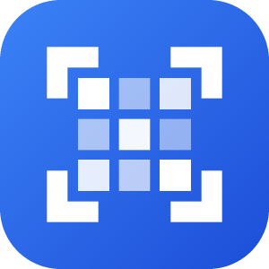
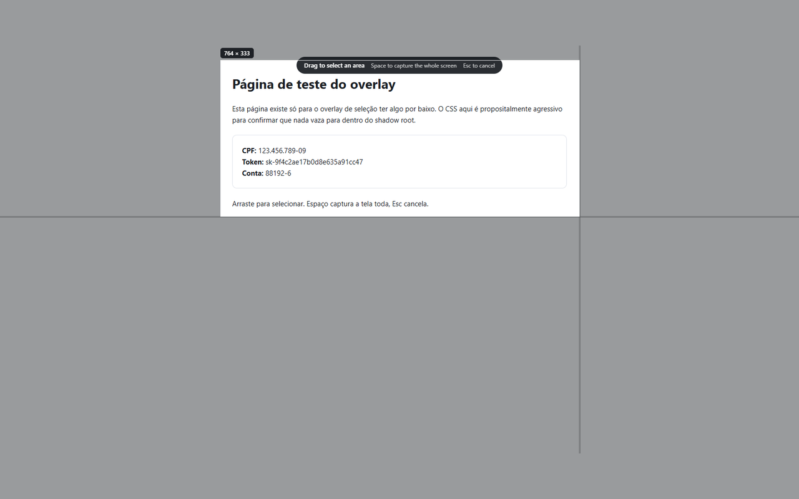
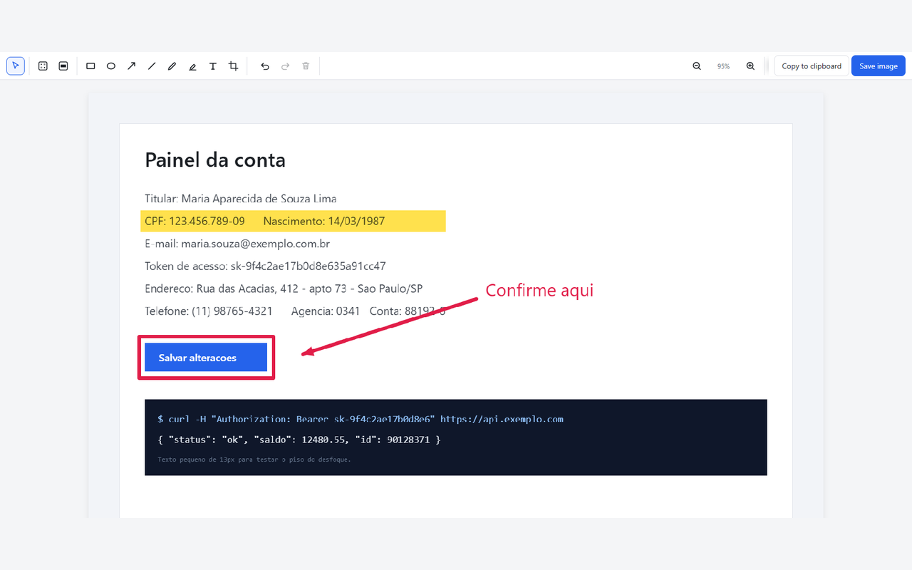
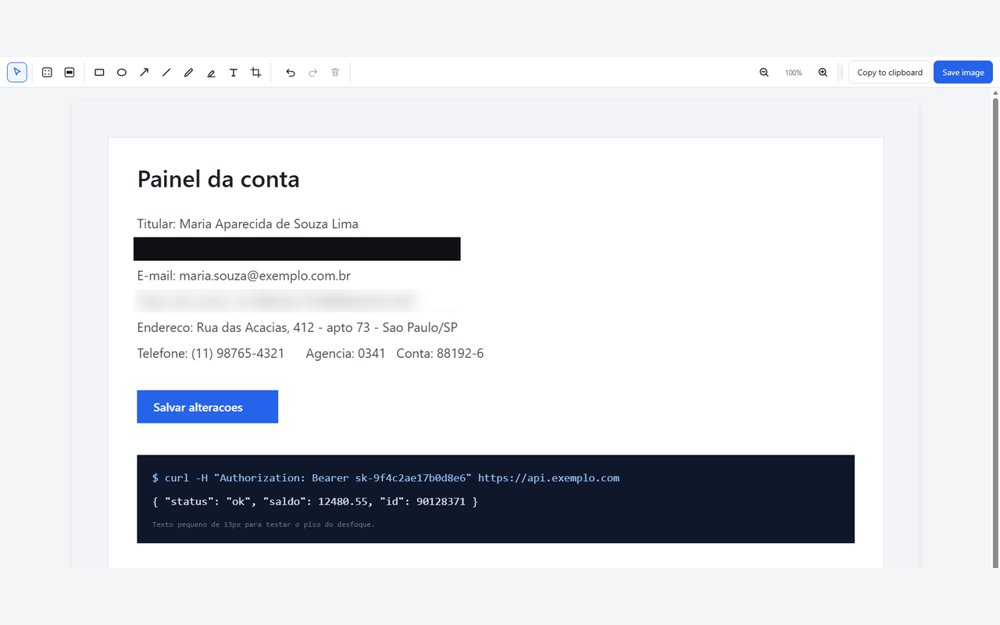

Select area
Drag a rectangle over any part of the page.

Screenshots that stay on your computer.
Version 1.0.0 is under review at Microsoft Edge Add-ons. The store link will appear here once it is published. Chrome Web Store and Firefox AMO are next.
Drag a rectangle over any part of the page.
Exactly what is on screen right now.
Scrolls the page and stitches it into one image.
A countdown first, for menus and hover states.

Rectangle, ellipse, arrow, line, pencil, highlighter and text, with colour, thickness and font controls. Undo and redo everything — including the crop, which is non-destructive, so undoing it brings the discarded pixels back.
Copy straight to the clipboard, or save as PNG.

Blur and pixelate are here. But blurred text can sometimes be reconstructed, so SnapLocal also gives you Redact: a solid block that cannot be reversed. The first time you blur something, it says so, and offers to convert that region to a redaction.
A privacy tool that quietly lets you leak a password is not a privacy tool.

The extension ships unminified, so the code in the store is the code you can read in the repository.
The interface is available in English, Português (Brasil), Português, Español, Français, Italiano, Deutsch, Русский, Polski, Türkçe and Bahasa Indonesia. Adding a language means translating one JSON file — no coding, no build step. See the contributing guide.